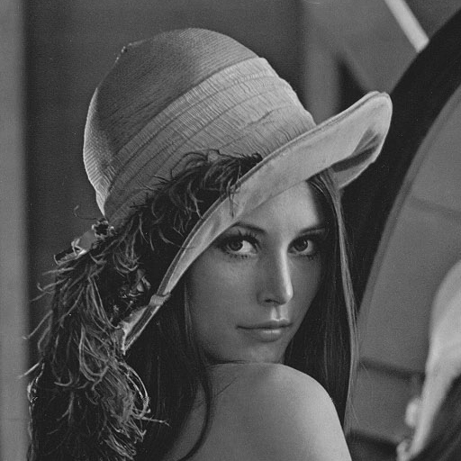
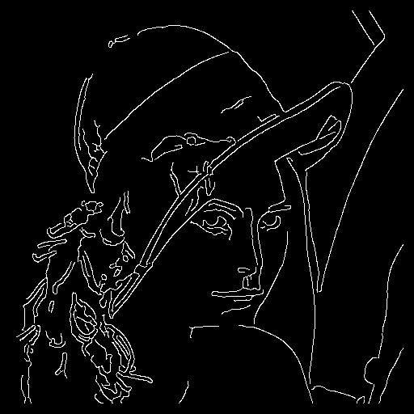
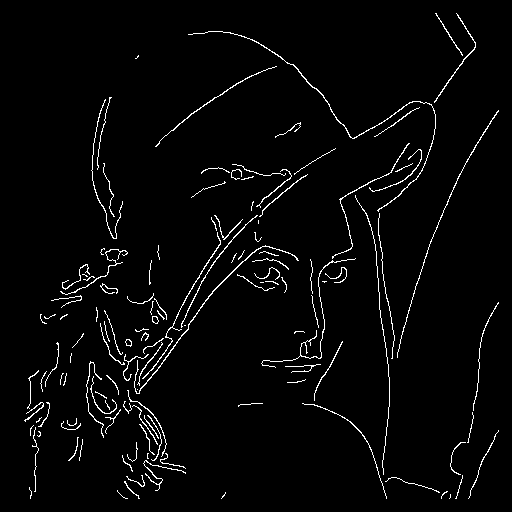
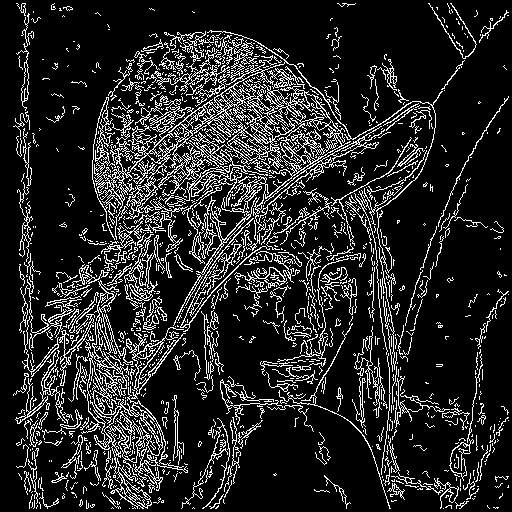
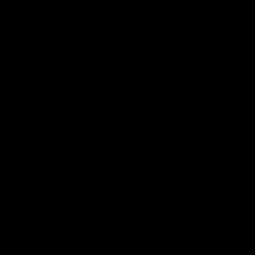
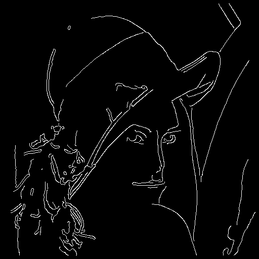
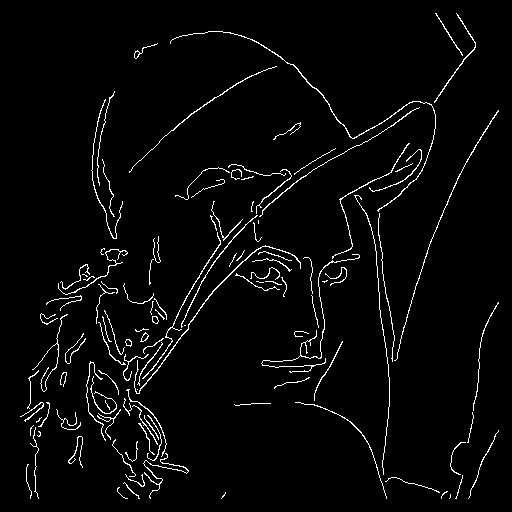
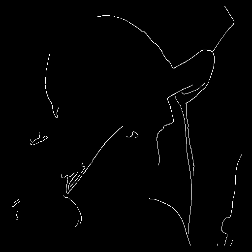

Get the C source here
canny.c
Canny edge detection is the Rolls Royce of edge detection algorithms.
It works by applying a 2-dinension filter which is a Gaussian in one direction and a Gaussian derivative in the other direction. This filter detects edges in the x and the y directions. This gives two gradient levels, one for x and one for y, which are combined by taking the squafre root of sum of squares. There is then a non-maximal suppression pass, where points which are not a local maximum are set to zero.
The next phase is edge following. It uses two parameters, one for starting an edge, one for continuing it. Because of the non-maximal suppression phase, every edge candidate pixel has only two neighbours. So edges can only be followed in two directions. One of the consequences of this is that Canny edge detection doesn't detect junctions. The edges stop just short of junctions.
There are two functions:
unsigned char *canny(unsigned char *grey, int width, int height);
This is self explantory. it perform Canny edge dection with sensible defaults. The return is a binary image with set pixels representing edges.
unsigned char *cannyparam(unsigned char *grey, int width, int height, float lowthreshold, float highthreshold, float kernelradius, int kernelwidth, int normalizecontrast);
This is the function to use if you want to control the internals of the edge detection.
lowthreshold - the value for continuing an edge (default 2.5).
highthreshold - the value for startign an edge (default 7.5).
kernelradius - the radius of the Gaussian, in standard deviations (defualt 2.0).
kernelwidth - width of the Gaussian, in pixels (default 16). You may want to change this if the image is of high or low resolution.
normalizecontrst - flag for performing a normalization step on the greyscale image before edge detection (default 0).

As always, we use Lena as the example image. Here she is in greyscale.

Here's the result of applying edge detection using default parameters. if you zoom in on the image you will notice that junctions don't quite join. Also, we can maybe improve some of the edges.

Here's the result of fiddling with the low threshold. Lines become longer when we set the low threshold smaller. But it's not a dramatic difference, because the non-maximal suppression has bacically defined the lines for us.
Here's the result of fiddling with the high threshold. Again, if we set the high threshold low we get more lines. But you don't get a dramatic difference.
 
Fiddling with the Gaussian kernel radius really changes the sensitivity. Set the radius to narrow and you get very many lines, set it wide and you get no lines at all. If you adjust between 1.5 and 3.0, you'll see more sensible behaviour.
 
Here's the result of fiddling with the kernel width. This surprised me since I expected fewer lines when the width was ramped up. In fact Lena is relatively high resolution image, so 16 is maybe sub-optimal for her.

Here's the result of applying greyscale normalization. In this case it suppresses virtually all of the lines. Again, a bit unexpected.